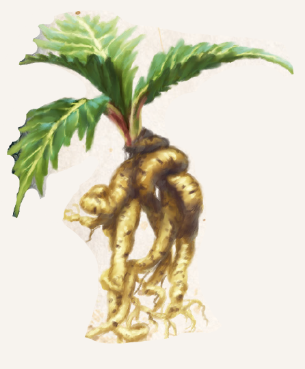

Vragieswurzel kommt südlich von Havena vor, und hier besonders häufig an den westlichen Abhängen des Regengebirges. Es ist jedoch möglich, die Pflanze in allen Klimazonen zu ziehen, obgleich der Erfolg solcher Bemühungen überschaubar ist. Im Süden wird sie häufig in Plantagen und dann bevorzugt in der Gesellschaft der Kandis- oder Brabaker Wurzel angepflanzt. Während letztere einfach zu kultivieren ist, gelangt allerding nur eine von zwanzig Vragieswurzeln zur Reife. Da die Vragieswurzel im Al`Anfaner Ritus als boronheilig gilt, ist der mühsame Anbau dennoch lukrativ. Der sichtbare Teil der Pflanze besteht aus länglich gefiedertem Laub, das dem von Möhren ähnelt. Es hat, anders als die Wurzel, keinerlei Nutzen. Diese ist von weiß-gelber Farbe und windet sich beim Wachsen um sich selbst. Aus ihr lässt sich ein milchig weißer, nach Lakritz riechender Saft gewinnen und zu einem starken Rauschmittel - dem Boronwein - verarbeiten. Wird die Wurzel roh gegessen, führt dies nicht nur zu Übelkeit und Erbrechen, sondern macht es für einen halben Tag unmöglich, Nahrung oder Flüssigkeit bei sich zu behalten.
Alchimistische Verwendung findet die Wurzel in Regenbogenstaub (Traumpulver). Um Boronwein herzustellen, werden zunächst drei Wurzeln zerkleinert und eingekocht. Dies ergibt einen zähen, milchweißen Saft, der mit Pflanzenöl versetzt wird, um seine Trinkbarkeit zu verbessern. Boronwein wird auch Elfenbeintraum genannt und erzeugt einen starken Rausch, der tiefe Zufriedenheit und überbordend bunte Halluzinationen hervorruft, äußerlich aber mit Lethargie und Teilnahmslosigkeit einhergeht. Er ist schon mit der ersten Dosis hoch suchterzeugend. Auch darüber hinaus ist er gefährlich, denn bei fehlerhafter Herstellung enthält er Gift, das den Rausch tödlich enden lässt. Boronwein ist zudem eine Ingredienz von Schlafgift.
Verbreitung:
Landschaftstyp: Wälder, Regenwälder, Gebirge
Regionen: Immergrüne Wälder (Südosten), Mittelhoher und Halbhoher Regenwald, Regengrüner Wald, Südliche Gebirge, Südliche Regengebirge, in Tempelgärten der Boronkirche des al’anfanischen Ritus
Suchschwierigkeit: -3
Bestimmungsschwierigkeit: -2
Anwendungen: 1/1/1/2/2/2
Wirkung:
Roh:
Berührung: keine
Einatmung: keine
Verzehr: giftig: 2 SP und 1 Stufe Betäubung für 12 Stunden (Stufe 2; wiederholtes Erbrechen, während dieser Zeit kann kein Wasser und keine Nahrung im Körper behalten werden)
Verarbeitet: siehe Rezepte
Preis: 5 / 8 Silbertaler
Rezepte:
Pflanzliche Rauschmittel: Boronwein, Schlafgift
Alchimistische Rauschmittel: Regenbogenstaub
Alltagsarzneien und Volksbrauchtum:
Aus überreifer, verholzter Vragieswurzel lassen sich kleine Figuren schnitzen.
Auf Boronangern des Südens sieht man sie gelegentlich auf Gräbern liegen, da sie Geister fernhalten sollen wie Vogelscheuchen Vögel.
Haltbarkeit:
Roh: siehe Haltbarmachung